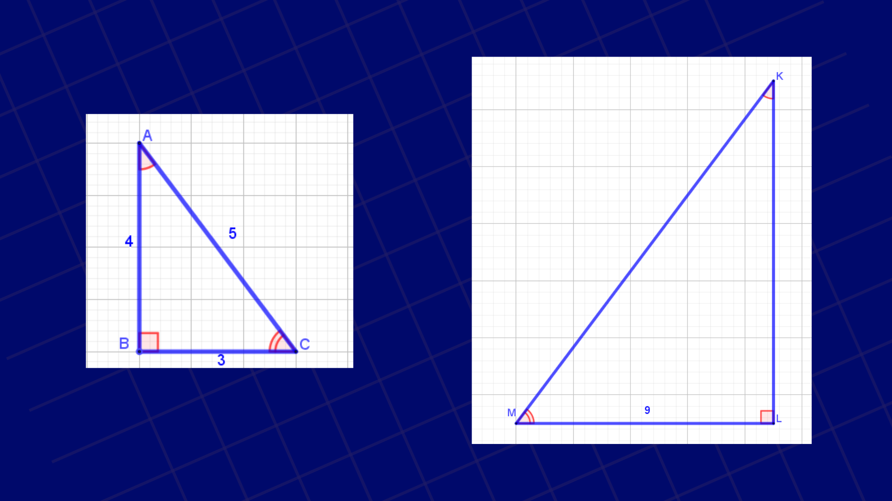

1. Peserta didik dapat menjelaskan pengertian kesebangunan dua segitiga
2. Peserta didik dapat menggunakan konsep kesebangunan dua segitiga untuk menyelesaikan masalah
Konsep Kesebangunan Antar Segitiga
Serupa dengan kesebangunan pada bangun datar.
Dua segitiga dikatakan sebangun jika memiliki bentuk dan ukuran yang sebanding
Contoh Kekongruenan Dua Segitiga
Berikut adalah contoh kesebangunan dua segitiga pada payasan Ogoh-ogoh
Gerakan slider dan amati segitiga ABC dan DEF.
Perhatikan bahwa ketika slider digeser panjang masing-masing sisi yang bersesuaian menjadi sama. Hal itu menunjukkan bahwa masing-masing sisi yang bersesuaian sebanding.
Contoh Soal dan Pembahasan
Perhatikan gambar berikut

Segitiga ABC dan KLM adalah dua segitiga yang sebangun. Tentukan panjang sisi KL!
Sebuah pohon yang berada di sebuah gedung perkantoran memiliki tinggi 8 meter. Pada saat tertentu bayangan gedung akan berhimpit dengan bayarangan pohon tersebut seperti tampak pada gambar berikut